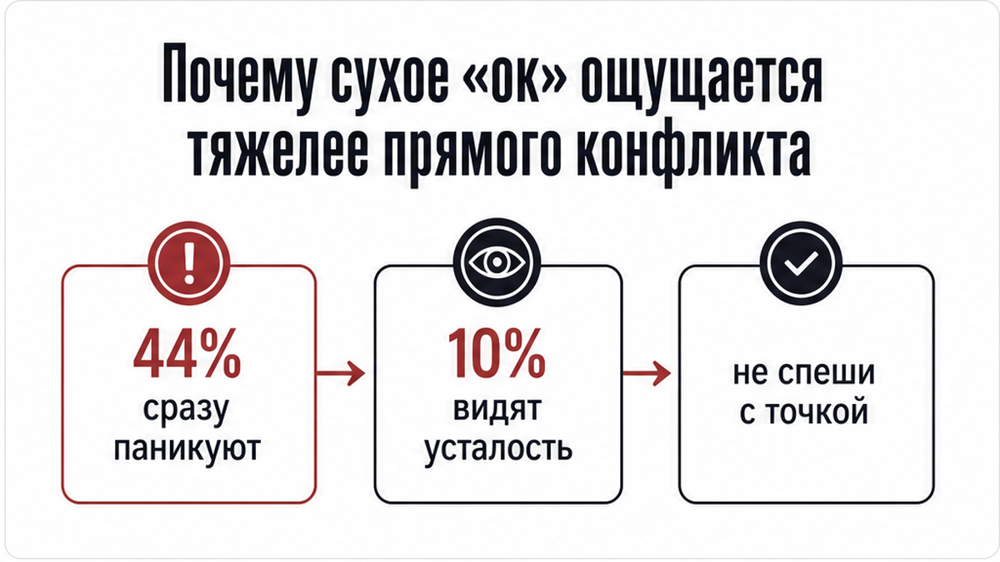
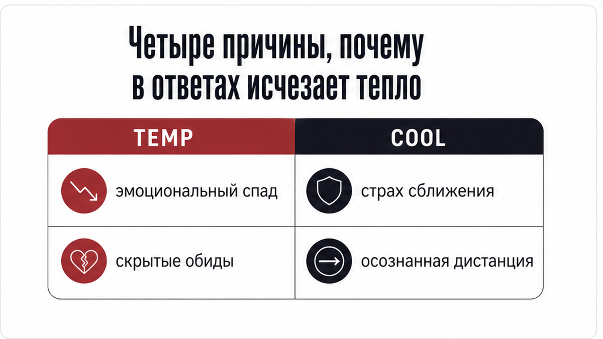
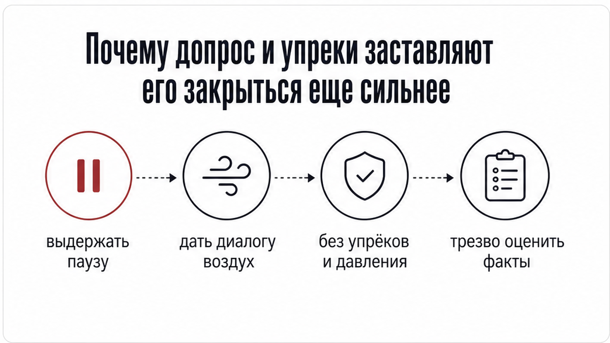

Утром телефон загорается от нового сообщения. Ты открываешь чат, а там сухое «ок» или «занят». Палец замирает над экраном, а в голове уже крутятся худшие сценарии.
Когда в ответах пропадает тепло, тревога сразу рисует расставание. Короткие реплики показывают смену состояния и дистанцию, а не окончательную точку. Здесь важно отделить обычную усталость от охлаждения и выбрать понятный шаг на сегодня.
Если нужно быстро разложить ситуацию на картах, открой бот в Макс. Там есть 3 бесплатных расклада на любые вопросы: можно спросить голосом или текстом, выбрать экспресс-расклад триплет из 3 карт или подробный кельтский крест на 10 карт.
Для глубокого разбора причин открой аудиоразбор через приложение во ВКонтакте или приложение Макс. Там сформируется разбор «Суть – Тень – Вектор», откроется карта практического совета и уточняющие вопросы для полной ясности.

Когда человек исчезает совсем, ситуация понятна сразу. Но когда сообщения продолжают приходить в виде скупых реплик, между вами повисает тяжелое напряжение. Прямой спор хотя бы дает факты и слова, а сухое «ок» оставляет тишину, которую хочется заполнить тревожными домыслами.
В такой ситуации больше 44% женщин сразу решают, что чувства угасли навсегда. И лишь около 10% допускают обычную усталость или загруженный день. Смена тона пугает сильнее ссоры, но односложный ответ фиксирует только текущее состояние человека, а не крах отношений.

Поведение мужчины может резко измениться по разным поводам. Важно отделить временную усталость от реального охлаждения и не пытаться угадывать чужие мысли.
Карты помогают трезво взглянуть на эту развилку. Они показывают, держится ли связь на взаимности или ты слишком долго тянешь все в одиночку.

Первый порыв при виде сухих ответов – немедленно потребовать прежней нежности или высказать накопившуюся обиду. Но давление и ультиматумы только усиливают желание отстраниться. Человек чувствует себя загнанным в угол и уходит в глухую защиту.
Попытки вернуть тепло бесконечными сообщениями или подчеркнутой заботой дают тот же результат. Намного надежнее спокойно сказать о своих чувствах без обвинений: «Я заметила, что общения стало меньше, и мне от этого грустно». А затем дать паузу и не превращать диалог в экзамен.
Чтобы сохранить внутреннее спокойствие и не разрушить контакт, держись простого плана на день:
Когда интонация в переписке меняется, важнее всего опереться на факты, а не на догадки. Карты помогают разобрать развилку между усталостью и охлаждением, оценить динамику и выбрать верный следующий шаг.
Чтобы быстро прояснить положение дел, заходи в бот в Макс. Там тебя ждут 3 бесплатных расклада: вопрос можно отправить текстом или голосом, выбрав экспресс-триплет на 3 карты или подробный кельтский крест из 10 карт.
Если нужен глубокий разбор ситуации, открой приложение во ВКонтакте или приложение Макс. Там доступен аудиоразбор по структуре «Суть – Тень – Вектор», карта практического совета и уточняющие вопросы для точных шагов.